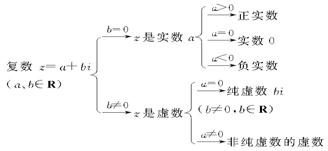

集合
1.数集
2.集合的包含
3.集合的运算
数集
自然数 N
(Natural number)
[0, +∞) ∈ N
{x| x >= 0 , x ∈ Z}
自然数: 0和正整数
[1, +∞) ∈ N+
{x| x >= 1 , x ∈ Z}
非零自然数: 所有正整数
整数 Z
(英:
integer
, 德:
Zahlen
)
Z, Z+ 略
有理数 Q
(
quotient
译: 商)
分数是有理数
实数 R
(Real number)
所有有理数和无理数，可以是整数、负数或零。
包括代数数与超越数。
复数 C
(
Complex
number)
实数与虚数的结合，格式是 a + bi，其中 a 和 b 是实数， i 是虚数
代数数 A
空集 ∅

集合的包含
子集 ⊆⊇
一般地，对于两个集合A 和B，如果
集合A 中的任何一个元素都属于集合B
，那么
集合A 叫做集合B的子集
，记作
A ⊇ B
或
B ⊆ A
，读作
“A包含于B”
或
“B包含A”
真子集 ⫋ (⊊ ⊋)
一般地，对于两个集合A 和B，如果
A ⊆ B
，
并且B中至少有一个元素不属于A
，
那么集合A叫做集合B的真子集
；记作
A ⊊ B
或
B ⊋ A
，读作
“A 真包含于 B”
或
“B 真包含于 A”
集合的运算
目前还不是考点就先不做了